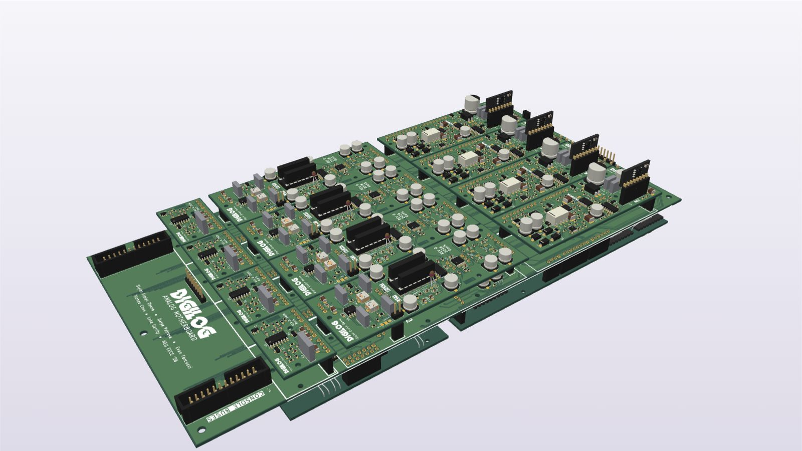

Analog section

Signal flow
One channel strip at block level; the routing board holds four. Dashed lines are control voltages from the digital section.
Design notes
- The routing board hosts four channel strips, each made of five plug-in cards: input, EQ, compressor, output (pan/fader) and sends. A full 16-channel console uses four of these buckets.
- No knob touches the audio: every setting is a DAC control voltage into a VCA, or a logic line driving an analog switch or relay.
- The routing board brings in the control voltages from the DAC board on 1.27 mm headers, makes the logic lines with 74HC595 shift registers, and switches the mix bus with ADG1412 analog switches.
- The balanced stereo mix bus and four aux buses leave on 2×12 ribbon headers for the next bucket and the master. Inserts use DRV135 line drivers and INA1651 balanced receivers.
- Power comes in on Samtec HPM connectors (±15 V).
- Safe power-up: every logic line has a pull-down and the DACs start from stored mute and flat settings, so a channel stays silent until the firmware takes over.
- The VCAs are dB-linear (AS2180, THAT2180A and SSI2164). On the input, EQ, output and sends cards, each one has an NTC thermistor bonded to it to cancel its temperature drift.
The analog cards
My little subseries: five plug-in cards that do the actual analog audio processing, all sitting in the motherboard above. Each one opens in its own 3D viewer.